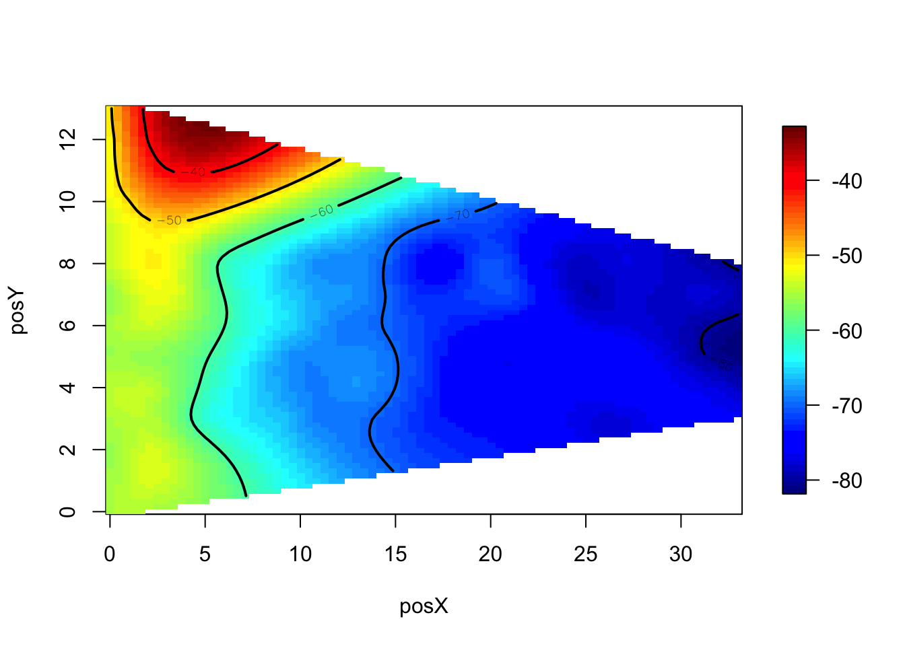

We have used visualization and statistical summaries to help clean and format the data, and now we turn to investigating the properties of the response variable, signal strength. We want to learn more about how the signals behave before designing a model for IPS. The following questions guide us in our investigations.
We consider these questions in the next two chapters.
We want to compare the distribution of signal strength at different orientations and for different access points, so we need to subdivide our data. We are interested in seeing if these distributions are normal or skewed. We also want to look at their variances.
We consider the impact of orientation on signal strength by fixing a location on the map to see how the signal changes as the experimenter rotates through the 8 angles. We also separately examine the MAC addresses because, for example, at an orientation of 90 degrees the experimenter may be facing toward one access point and away from another.
offline %>%
filter(posX == 2, posY == 12, mac != '00:0f:a3:39:dd:cd') %>%
ggplot(aes(angle, signal)) +
geom_boxplot() +
facet_wrap(~ mac)
Figure 4.1: Signal Strength by Angle for Each Access Point. The boxplots in this figure represent signals for one location, which is in the upper left corner of the floor plan, i.e., \(x = 2\) and \(y = 12\). These boxes are organized by access point and the angle of the hand-held device. The dependence of signal strength on angle is evident at several of the access points, e.g., 00:14:bf:97:90 in the top right panel of the figure.
We see in Figure 4.1 that the signal strength varies with the orientation for both close and distant access points. Note we have dropped the records for the MAC address of 00:0f:a3:39:dd:cd because it is identified as the extra address in the next chapter.
Recall from the summary statistics that signal strengths are measured in negative values. That is,
summary(offline$signal)## Min. 1st Qu. Median Mean 3rd Qu. Max.
## -98.00 -67.00 -59.00 -59.92 -53.00 -25.00The small values, such as -98, correspond to weak signals and the large values, such as -25, are the strong signals.
When we examine a few other locations, we find a similar dependence of signal strength on angle. For example, we compare the distributions of signal strength for different angles and MAC addresses at the central location of \(x = 23\) and \(y = 4\).
offline %>%
filter(posX == 24, posY == 4, mac != '00:0f:a3:39:dd:cd') %>%
ggplot(aes(signal)) +
geom_density() +
facet_grid(factor(angle) ~ mac)Figure 4.2: Distribution of Signal by Angle for Each Access Point. The density curves shown here are for the signal strengths measured at the position: \(x = 24\) and \(y = 4\). These 48 density plots represent each of the access point × angle combinations. There are roughly 110 observations in each panel. Some look roughly normal while many others look skewed left.
Many of these distributions look approximately normal, but there are some serious departures with secondary modes and skewness (see Figure 4.2). Also, the center of the distribution varies with angle and MAC address, which indicates that conditioning on angle and MAC address is warranted.
If we want to examine the distribution of signal strength for all 166 locations, 8 angles, and 6 access points, we need to create thousands of boxplots or density curves. We can, instead, examine summary statistics such as the mean and SD or the median and IQR of signal strength for all location–orientation–access point combinations. For each combination, we have roughly 100 observations.
offline_summary <- offline %>%
group_by(posX, posY, angle, mac) %>%
summarise(length = length(signal),
med = median(signal),
mean = mean(signal),
sd = sd(signal),
iqr = IQR(signal)) %>%
ungroup()Let’s examine the standard deviations and see if they vary with the average signal strength. We can make boxplots of sd for subgroups of mean by turning mean into a categorical variable. We do this with
breaks <- seq(-90, -25, by = 5)
offline_summary %>%
filter(mac != '00:0f:a3:39:dd:cd') %>%
ggplot(aes(cut(mean, breaks), sd)) +
geom_boxplot() +
labs(x = 'Mean signal', y = 'SD signal')Figure 4.3: SD of Signal Strength by Mean Signal Strength. The average and SD for the signals detected at each location-angle-access point combination are plotted against each other. The weak signals have low variability and the stronger signals have greater variability.
We see in Figure 4.3 that the weakest signals have small standard deviations and that it appears that the SD increases with the average signal strength. If we plan to model the behavior of signal strength, then we want to take these features into consideration.
We examine the skewness of signal strength by plotting the difference, mean - median, against the number of observations. We do this with a smoother to avoid problems with over-plotting and to see a local average of the difference between the mean and median to better help us assess its size. We do this with:
offline_summary %>%
mutate(diff = mean - med) %>%
ggplot(aes(length, diff)) +
stat_density2d(aes(fill = ..density..^.25), geom = 'tile', contour = FALSE, n = 140) +
geom_smooth(color = 'black', se = FALSE) +
geom_hline(yintercept = 0, size = 0.5, color = 'grey30') +
scale_fill_continuous(low = 'white', high = 'firebrick', name = 'density') +
labs(x = 'number of observations', y = 'mean - median')## `geom_smooth()` using method = 'gam'Figure 4.4: Comparison of Mean and Median Signal Strength. This smoothed scatter plot shows the difference between the mean and median signal strength for each combination of location, access point, and angle against the number of observations. These differences are close to 0 with a typical deviation of 1 to 2 dBm.
From Figure 4.4 we see that these two measures of centrality are similar to each other; they typically differ by less than 1 to 2 dBm.
One way to examine the relationship between distance and signal strength is to smooth the signal strength over the region where it is measured and create a contour plot, similar to a topographical map; that portion of the floor plan where there is strong signal corresponds to the mountainous regions in the contour map. As with our previous analysis of signal strength, we want to control for the access point and orientation. Let’s begin by selecting one MAC address and one orientation to examine. We choose the summary statistics for an angle×MAC address combination with, e.g.,
one_ap_angle <- offline %>%
filter(mac == top_macs[5], angle == 0)We can make a topographical map using color, i.e., a heat map. The fields package uses the method of thin plate splines to fit a surface to the signal strength values at the observed locations. This package also provides plotting routines for visualizing the surface with a heat map. The Tps() function in fields requires that we provide a unique “z” value for each \((x, y)\) so we must summarize our signal strengths. Rather than use offline, which gives, in one_ap_angle, about 100 recordings of signal strength at each location, we subset offline_summary with
one_ap_angle <- offline_summary %>%
filter(mac == top_macs[5], angle == 0)Then, after loading fields, we call Tps() to fit a smooth surface to mean signal strength:
library(fields)
smooth_ss <- one_ap_angle %>%
select(posX, posY) %>%
Tps(one_ap_angle$mean)Next, we use predictSurface() to predict the value for the fitted surface at a grid of the observed posX and posY values, i.e.,
viz_smooth <- predictSurface(smooth_ss)Then we plot the predicted signal strength values using plot.surface() as follows:
plot.surface(viz_smooth, type = 'C')
Lastly, we add the locations where the measurements were taken:
points(one_ap_angle$posX, one_ap_angle$posY, pch = 19, cex = 0.5)We can wrap this plotting routine into its own function so that we can parameterize the MAC address and angle, and if desired, other plotting parameters. Our function, called surfaceSS(), has 3 arguments: data for the offline summary data frame, and mac and angle, which supply the MAC address and angle to select the subset of the data that we want smoothed and plotted.
surfaceSS <- function(df, m, a, ...) {
library(fields)
one_ap_angle <- filter(df, .data$mac == m, .data$angle == a)
viz_smooth <- one_ap_angle %>%
select(posX, posY) %>%
Tps(one_ap_angle$mean) %>%
predictSurface() %>%
plot.surface(type = 'C', ...)
points(one_ap_angle$posX, one_ap_angle$posY, pch = 19, cex = 0.5)
invisible(one_ap_angle)
}We call surfaceSS() with a couple of MAC addresses and angles to compare them. To do this, we first modify R’s plotting parameters so that we can place 4 contour plots on one canvas, and we reduce the size allocated to the margins so more of the canvas is dedicated to the heat maps. We save the current settings for the plotting parameters in par_cur, and then we make 4 calls to our surfaceSS() function using purrr::pwalk() as follows:
par_cur <- par(mfrow = c(2, 2), mar = rep(1, 4))
args <- data_frame(m = rep(c('00:14:bf:b1:97:90',
'00:0f:a3:39:e1:c0'), each = 2),
a = rep(c(0, 135), 2))
pwalk(args, surfaceSS, df = offline_summary, zlim = c(-90, -30), axes = FALSE)
Figure 4.5: Mean Signal at Two Access Points and Two Angles. These four heat maps provide a smooth topographical representation of signal strength. The top two maps are for the access point 00:14:bf:b1:97:90 and the angles 0 (left) and 135 (right). The two bottom heat maps represent the signal strength for the access point 00:0f:a3:39:e1:c0 and the same two angles.
par(par_cur)In Figure 4.5 we see that we can easily identify the location of the access point as the dark red region at the top of the “mountain.” We also confirm the effect of the orientation on signal strength. Additionally, a corridor effect emerges. The signal is stronger relative to distance along the corridors where the signals are not blocked by walls.
We know the locations of the access points based on the floor plan of the building, but we have not been given their exact location and we do not know the mapping between MAC address and access point. Fortunately, the contour maps that we just created make it easy to connect the MAC address to the access point marked on the floor plan in Figure 2.1. For example, from Figure 4.5, the signals appearing in the top row of the plot clearly correspond to the access point in the top left corner of the building. Also, according to the documentation, the training data were measured at 1 meter intervals in the building so we can use the grey dots on the plan to estimate the location of the access points. We find that two MAC addresses have similar heat maps and these both correspond to the access point near the center of the building (i.e., \(x = 7.5\) and \(y = 6.3\)). We choose the first of these and leave as an exercise the analysis of the impact of this decision on predicting location.
offline_summary <- offline_summary %>%
filter(mac != top_macs[2])We create a small data frame with the relevant positions for the 6 access points on the floor plan with
ap <- data_frame(mac = top_macs[-2],
x = c(7.5, 2.5, 12.8, 1, 33.5, 33.5),
y = c(6.3, -.8, -2.8, 14, 9.3, 2.8))
ap## # A tibble: 6 x 3
## mac x y
## <chr> <dbl> <dbl>
## 1 00:0f:a3:39:e1:c0 7.5 6.3
## 2 00:14:bf:b1:97:8a 2.5 -0.8
## 3 00:14:bf:3b:c7:c6 12.8 -2.8
## 4 00:14:bf:b1:97:90 1.0 14.0
## 5 00:14:bf:b1:97:8d 33.5 9.3
## 6 00:14:bf:b1:97:81 33.5 2.8To examine the relationship between signal strength and distance from the access point, we need to compute the distances from the locations of the device emitting the signal to the access point receiving the signal. We first compute the difference between the \(x\) coordinate and access point’s \(x\) coordinate and the similar difference for the \(y\) coordinates. Then we use these differences to find the Euclidean distance between the position of the hand-held device and the access point. We can do all this with
offline_summary <- offline_summary %>%
left_join(ap, by = 'mac') %>%
mutate(dist = sqrt((posX - x)^2 + (posY - y)^2)) %>%
select(-x, -y)Finally, we make a series of scatter plots for each access point and device orientation with
ggplot(offline_summary, aes(dist, mean)) +
geom_point(size = 0.2, alpha = 0.8) +
facet_grid(angle ~ mac) +
labs(x = 'distance', y = 'average signal strength')Figure 4.6: Signal Strength vs. Distance to Access Point. These 48 scatter plots show the relationship between the signal strength and the distance to the access point for each of the 6 access points and 8 orientations of the device. The shape is consistent across panels showing curvature in the relationship.
The scatter plots appear in Figure 4.6. There appears to be curvature in the plots. A log transformation might improve the relationship. However, the signals are negative values so we need to be careful in taking a log transformation. We leave it to the reader to further investigate this relationship between signal strength and distance.